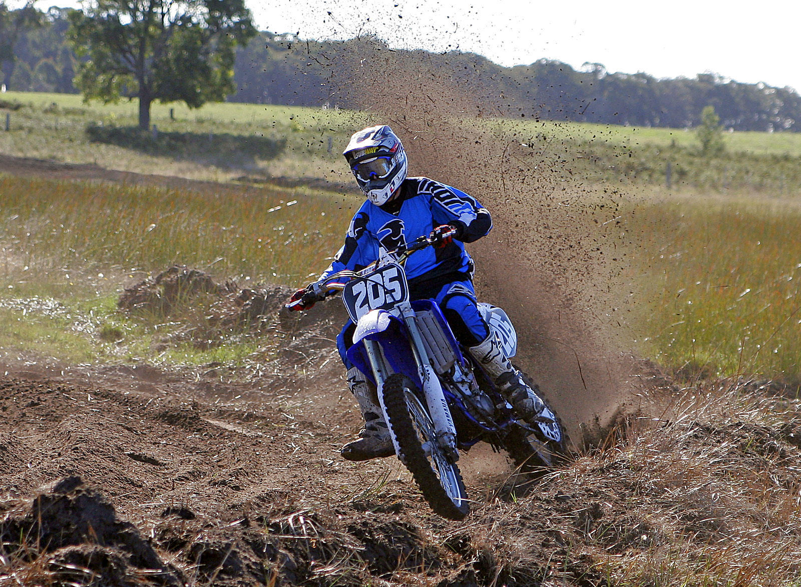

Motokros je druh motocyklového sportu. Závody se jezdí na uzavřených terénních tratích. Motocykly jsou speciálně konstruovány pro jízdu v terénu a dělí se do výkonových kategorií podle kubatury.
Zdroje:
Online. In: Wikipedia: the free encyclopedia. San Francisco (CA): Wikimedia Foundation, 2001-, 26.2.2024. Dostupné z: https://cs.wikipedia.org/wiki/Motokros [cit. 2024-06-03].
LIBOR PODMOL FMX RIDER (KODO050). Online. In: Kolamadolu.cz. 2014. Dostupné z: https://www.kolamadolu.cz/libor-podmol-fmx-rider-kodo050/ [cit. 2024-06-03].